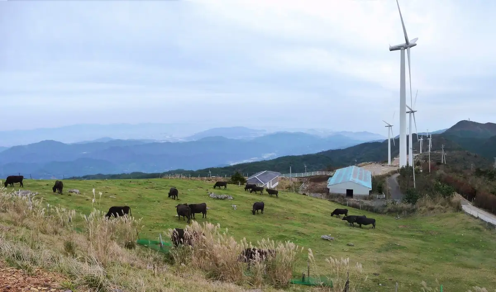
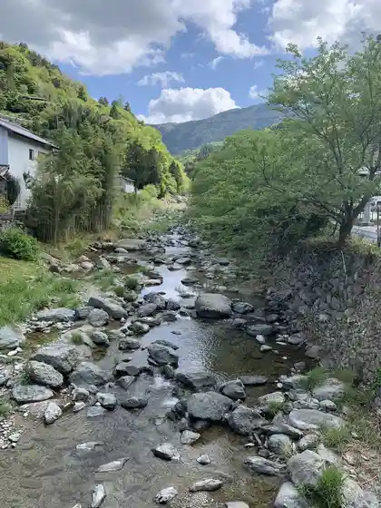
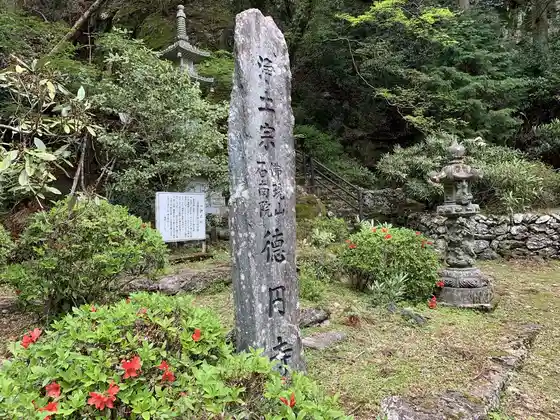
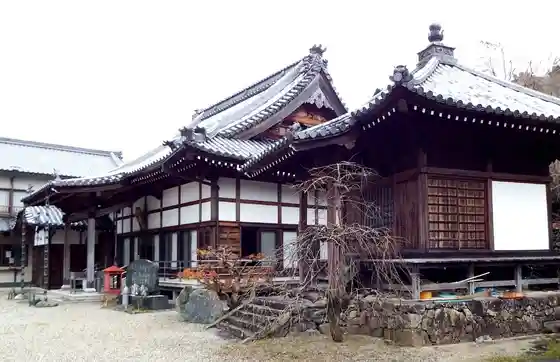

Japan / Tokushima / Sanagochi Village
Sanagochi Village
Sanagochi Village · Tokushima
Sanagochi Village
Highlighted on the Tokushima map.

Sights
Okawara Highlands
Saga Kyo

Shakunage (Toku En Tera)

Okawara Ho Ranch
Hozo Tera

Seiryu no Gen